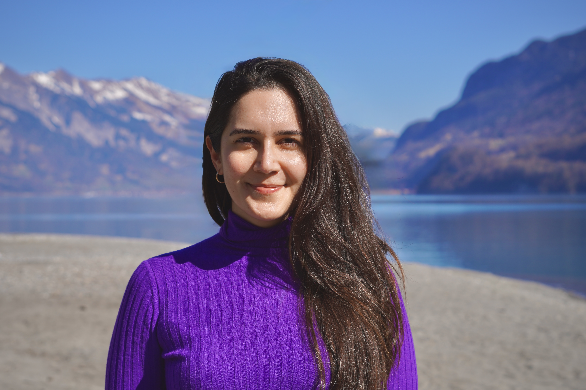

I am a plant ecologist interested in how climate change affects plants over time, from individuals and populations to entire communities. My scientific motivation is to understand the processes driving plant responses in order to improve forecasts of biodiversity across time and space. Currently, I am a postdoctoral researcher and lecturer at ETH Zürich.
Explore projects
My research combines field experiments, observational data, and statistical modeling to understand how ecological change unfolds over time. I ask how response rates and lags shape the predictability of future biodiversity change.
I examine how plant populations and communities respond to climate change, from individual performance and population dynamics to shifts in community composition across environmental gradients.
I focus on the temporal processes that shape ecological change, including rates of adjustment, delayed responses, and transient dynamics, as well as the roles of acclimation and biotic interactions.
A central goal of my work is to understand when ecological change is predictable, when it is not, and how response lags limit our ability to forecast future biodiversity patterns.
Ecological change often unfolds more slowly than climate change itself. My research shows that populations and communities can remain in long transient states, where ecological reorganization lags behind climate change. Accounting for these lags is essential for improving forecasts of future biodiversity.
Many of the questions I work on—about rates of change, delayed responses, and predictability—can only be addressed through collaboration. I work within international research networks that span institutions and disciplines, enabling comparative analyses across sites and regions and the development of shared frameworks for forecasting ecological change over time.